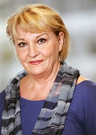

Anita Wester-Wedman
Biitr. psykolog 1975 i Umeå, fil dr, proessor och forskare vid ped. inst Umeå univ,.
| Född: | 1947 Brände 16:3, Nysätra fs, Nysätra sn. [1] |
|---|
| Änka: | 2008-01-20 Peterséns Väg 29, Skärholmens fs, Stockholms stad. [2] |
|---|
| Levde: | 2019 Umeå, Umeå sfs, Umeå kn. [3] |
|---|
| Vigsel: | 1972-07-04 Umeå, Umeå sfs, Umeå kn. [4] |
|---|
| Levde: | 1975 Vargv 45, Umeå, Umeå kn. [4] |
|---|
| Levde: | 1976 Umeå, Ålidhems fs, Umeå kn. [4] |
|---|
| Vigsel: | 1982-06-22 Umeå, Ålidhems fs, Umeå kn. [5] |
|---|
| Levde: | 1991 Stg 2143Cö, Vargv 45, Umeå, Ålidhems fs, Umeå kn. [6] |
|---|
Noteringar
Anita Wester var forskarkollega med sin make Ingemar Wedman i pedagogik vid Umeå universitet.
Senast undervisningsråd vid Skolverket i Stockholm
Kontaktperson betr. PISA
SUH Innovation AB
Bolaget registrerat: 2002-11-26
Konkurs avslutad 2015-04-17
Verksamhetsbeskrivning
Föremålet för bolagets verksamhet är att utveckla, bedriva och kvalitetssäkra utbildning på gymnasie- och högskolenivå. I bolagets verksamhet ingår också att bedriva boende med särskild service enligt LSS. Därutöver ingår att arrangera konferenser, kurser, träningsläger och andra arrangemang. I bolagets verksamhet ingår även att bedriva restaurang- och caféverksamhet samt att bedriva gym- och träningsverksamhet. Vidare att ge service i frågor rörande hälsa och fysisk aktivitet för personer med funktionsnedsättning samt därmed förenlig verksamhet. Bolaget bedriver även utveckling av tränings- och testredskap samt hjälpmedel och annan utrustning kopplat till området anpassad fysisk aktivitet.
Personhistoria
| Årtal | Ålder | Händelse |
|---|
| 1947 |
|
Födelse 1947 Brände 16:3, Nysätra fs, Nysätra sn [1] |
| 1972 |
|
Sonen Daniel Lindgren föds 1972 Umeå, Umeå sfs, Umeå kn [4] |
| 1972 |
|
Vigsel Åke Lindgren 1972-07-04 Umeå, Umeå sfs, Umeå kn [4] |
| 1974 |
|
Sonen Fredrik Lindgren föds 1974 Östersund, Östersund fs, Östersunds kn [4] |
| 1975 |
|
Levde Åke Lindgren 1975 Vargv 45, Umeå, Umeå kn [4] |
| 1976 |
|
Levde Åke Lindgren 1976 Umeå, Ålidhems fs, Umeå kn [4] |
| 1982 |
|
Vigsel Ingemar Wedman 1982-06-22 Umeå, Ålidhems fs, Umeå kn [5] |
| 1983 |
|
Sonen Jonathan Wedman föds 1983 Umeå, Ålidhem fs, Umeå kn [5] |
| 1991 |
|
Levde Ingemar Wedman 1991 Stg 2143Cö, Vargv 45, Umeå, Ålidhems fs, Umeå kn [6] |
| 2006 |
|
Modern Anni Teodora Katarina Aronsson dör 2006-04-19 Brände 215, Ånäset, Bygdeå fs, Robertsfors kn [7] |
| 2008 |
|
Maken Ingemar Wedman dör 2008 Peterséns Väg 29, Skärholmens fs, Stockholms stad [2] |
| 2008 |
|
Änka 2008-01-20 Peterséns Väg 29, Skärholmens fs, Stockholms stad [2] |
| 2010 |
|
Fadern Hans Gösta Vester dör 2010-10-21 Bäckvägen 3, Robertsfors, Bygdeå fs, Robertsfors kn [8] |
| 2019 |
|
Levde 2019 Umeå, Umeå sfs, Umeå kn [3] |
Dokument
Källor
| [1] | Mtl Sveriges befolkning 1950 |
| |
| | |
| [2] | FK 09, man91, SDB7_05469833 |
| |
| | |
| [3] | www.ratsit.se/sok/avancerat/person |
| |
| | |
| [4] | Mtl Sveriges befolkning 1975 |
| |
| | |
| [5] | Mtl Sveriges befolkning 1985 |
| |
| | |
| [6] | Mantalslängd 1991, Västerbottens län |
| |
| | |
| [7] | FK 09, man91, SDB7_04083097 |
| |
| | |
| [8] | FK 13, man91, SDB7_04328056 |
| |
|
|  |
Anita Wester,
undervisningsråd vid Skolverket
|
|
{kind=link}